| |
Prairie Screamer Review
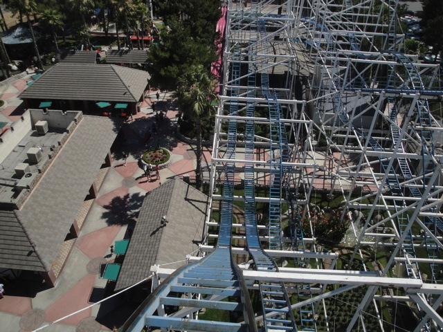
Now this ride is currently located at Prairie Playland, which is near Dallas. But when I last rode it, it was at Scandia. Now for most people, this looks like a big credit whoring coaster. Nothing looks special about it. But looks can be deciving. Find out for yourselves. Hop in the car, buckle the seatbelt, pull down your lap bar and let me show you just how crazy this ride is. After rolling around a turn, we go up the lifthill. The lifthill is nothing special. There's not much to see, though if you do looked straight down, you will be able to see just how much there is to the ride. But anyways, fast foreword to the top of the lift hill. We slowly go around the turn. Just waiting to drop. We crawl towards it, and then we drop. HOLY CRAP!!! Are we supposed to be gaining this much speed? SLOW DOWN!!! SLOW DOWN!!! THIS SHOULDN'T GO THIS FAST!!! We then roar up a big hill. A lot of our speed is gone. But we know just what this ride was capable of, and now suddenly, this seemed a little too flimsy to do what it's doing. We roll around the turn, and now we see another big drop. WHAM!!!! We gain a lot more speed before rising up another big hill under the main first drop. So far, it's pretty good. Nothing insane, but good. After going around a turn under the main turn before the first drop, we once again go down another big drop before rising up again for another turn under the next section. Ok, now it's starting to get a little repetitive. But don't worry. It's getting even crazier. The turns are starting to gain some laterals and now we're going down a small drop which gives us some great airtime. We then go through a tiny bunny hop that ejects us from our seats and actually drops us down towards the ground, giving us even more speed. We then rise up, and go through a sharp turn, which indeed gives us more laterals. We exchange those laterals for more airtime as we dip back down, getting thrown out of our seats. As we go through the bunny hop and get ejected, we wonder if the ride was intended to be this crazy or if it just failed as a family coaster and accidentally gave us crazy folks a reason to smile. Either way, HOORAY FOR INSANITY!!! =) Just because we're crazy now doesn't mean it's at its peak. Its about to get even wilder. We get some seriously wicked laterals around the turn and dip down again. Now we do go through another bunny hop. But this one has a trim brake on it. Yeah, I can't really blame them for adding a trim. It needed it. We then rose up a little hill and SLAM into a final turn. And I mean SLAM!!! These laterals are double that of a Wild Mouse. It's insane. After that insanity, we glide through some straight track into the brake run. Holy Crap! Was that supposed to be a family ride because its just absolutely insane! The entire ride is on crack@ And I love it for that. It's for reasons like this that I ranked it the 3rd Most Underrated Coaster ever. It's' just absolutely insane. If you find yourself in the Dallas/Fort Worth area, be sure to stop on by and check out Prairie Screamer! I loved it as Scandia Screamer and will FOR SURE come and ride it when I'm back in Texas. I'm not doing it for the credit. It's genuinely a ton of fun. =)
7/10
Location: Prairie Playland
Opened at Scandia Ontario in 1995
Moved to Prairie Playland in 2022
Built by: Miler Coasters
Last Ridden: November 18, 2018
Scandia Screamer Photos
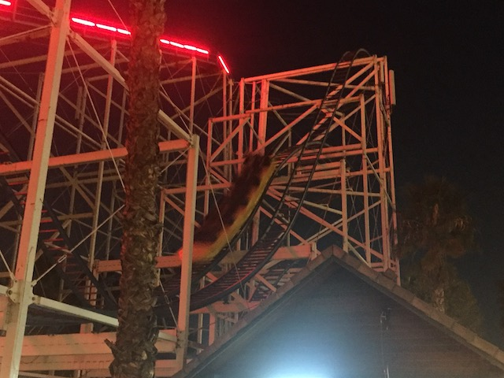
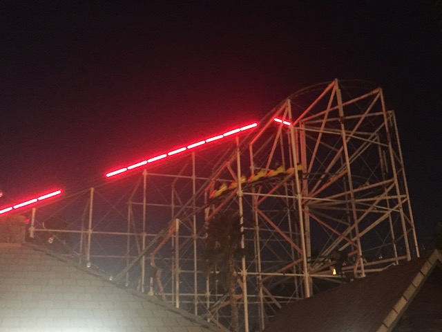
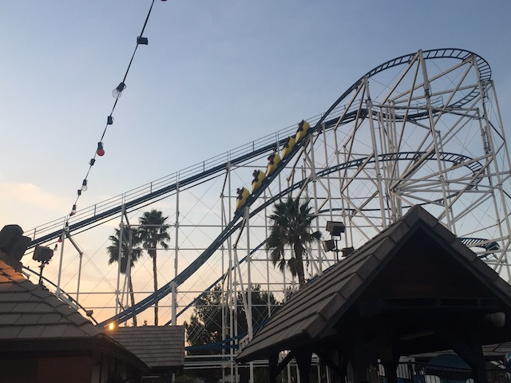
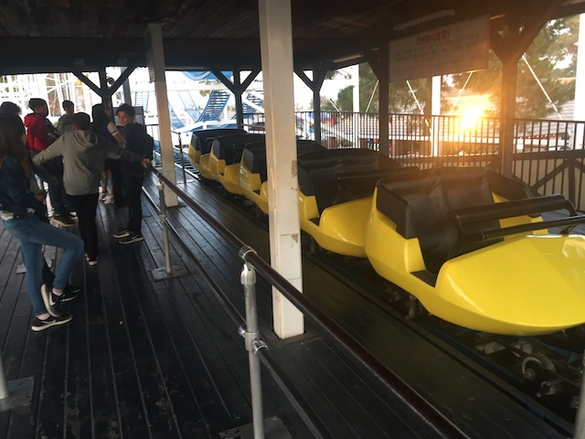
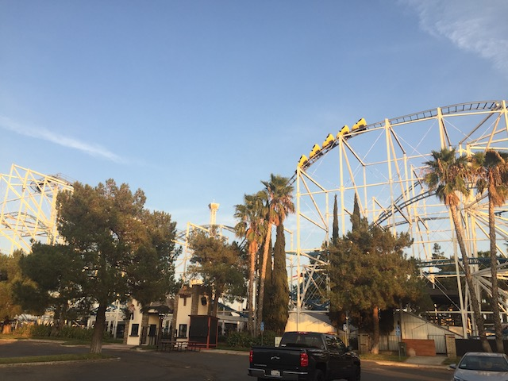


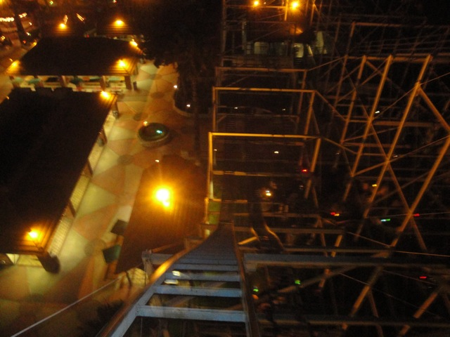
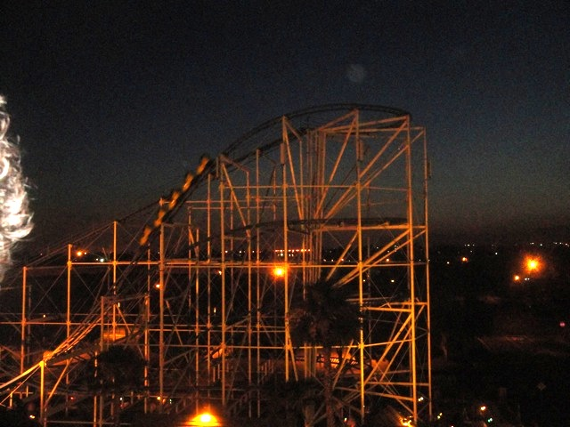
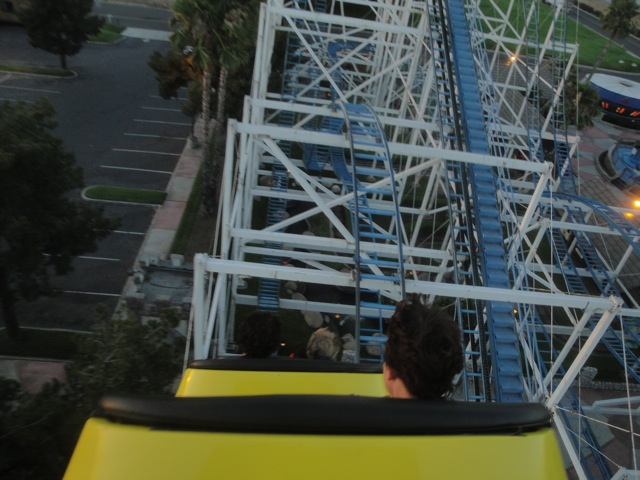
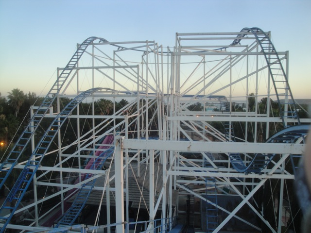


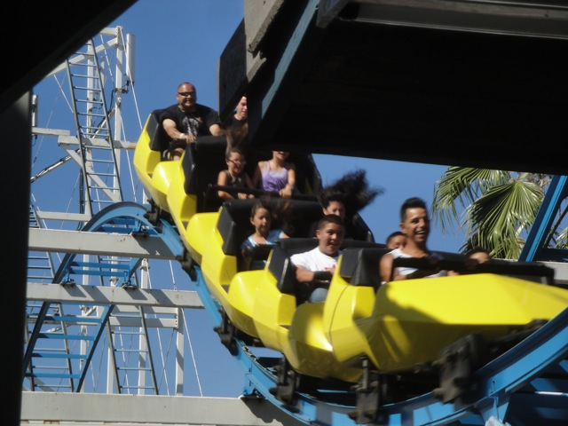
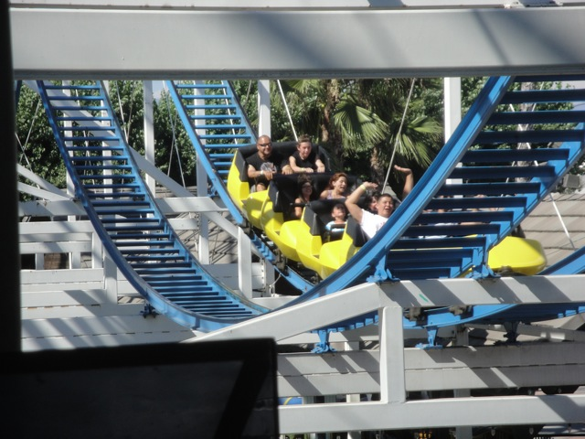
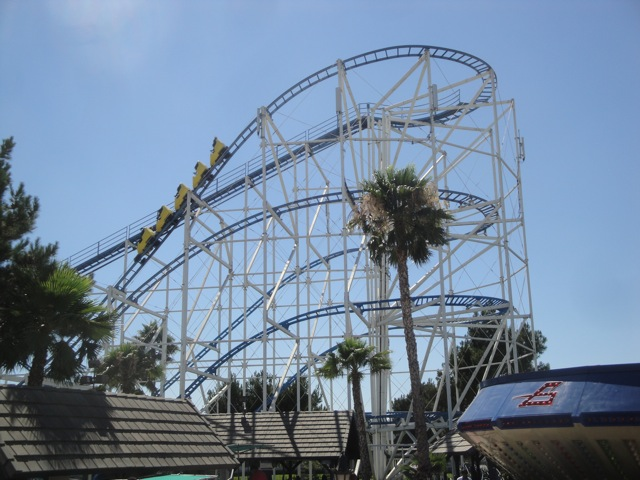
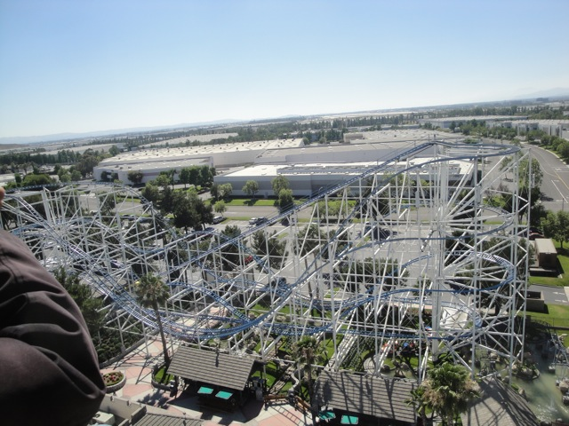
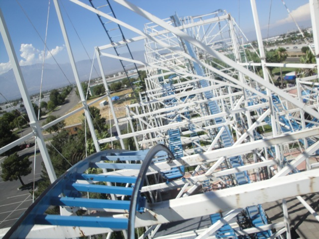

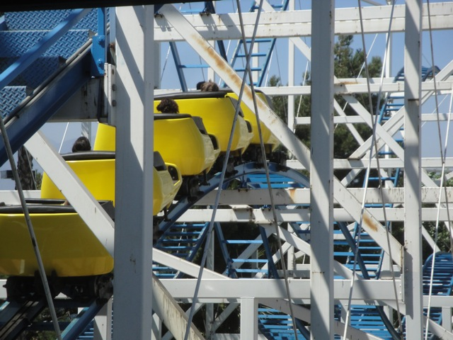
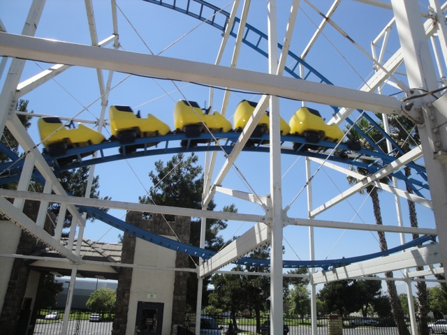
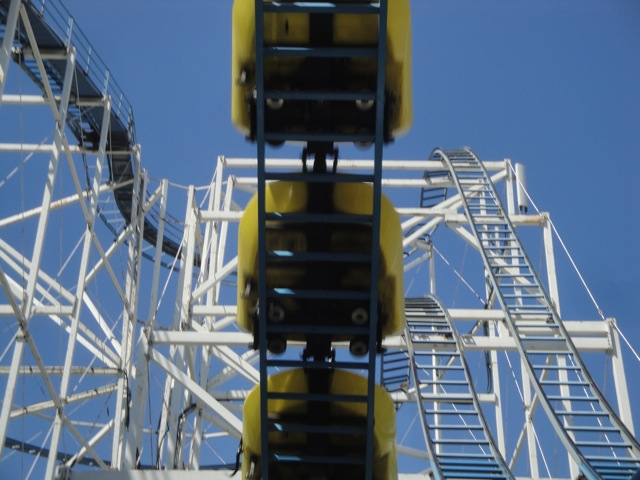
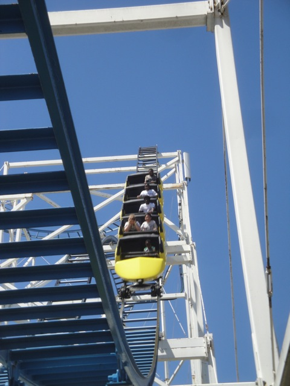
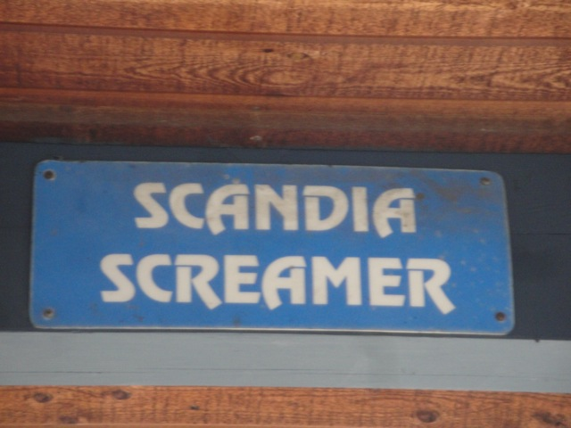
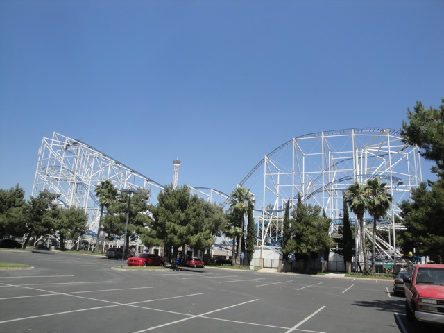
Home
|